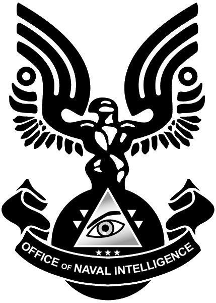

What is ONI
The Office of Naval Intelligence was founded in 2178. One of our earliest known projects was in 2321. This project, dubbed ORION, was an attempt to increase the effectiveness of Colonial Military Authority soldiers, though it was eventually postponed.
In 2491, the Carver Findings were released, guiding ONI's approach to the growing Insurrectionist threat, leading to Operation: TREBUCHET. Our operatives were crucial in suppressing uprisings across the Outer Colonies, securing Earth's control. However, this focus left us unprepared when the Covenant emerged...
In 2524, military personnel were selected from boot camps as candidates for the new Generation II ORION Project, later known as the Spartan-II program. These individuals were sent to Reach for rigorous training and eventual augmentation. The Office of Naval Intelligence, commonly referred to as ONI, is the intelligence arm of the United Nations Space Command Navy. While we are seen as the UNSC’s information-gathering and analysis division, ONI’s reach extends far beyond typical intelligence work. ONI in the War Against the Covenant At the onset of the war, several ONI analysts hypothesized that the Covenant may have visited Earth in ancient times. This idea arose partly from the presence of the small, meter-and-a-half tall Unggoy in Covenant ranks, which led to the Covenant earning the nickname "LGM" or "Little Green Men". As the war progressed, ONI absorbed or dismantled most other military and civilian espionage organizations. To ensure unity during such a critical time, internal conflict had to be eliminated. some criticize this, but when humanity is faced with prospect of extinction any alternative is preferable. Post-War After the war’s conclusion, ONI emerged as the leading intelligence body of the Unified Earth Government. Our war efforts earned us considerable autonomy, overseen only by the UNSC Security Council. In 2555, Admiral Serin Osman took over from Admiral Margaret Parangosky as the Commander-in-Chief of ONI (CINCONI).
Sections of ONI
Section-1
Section One is ONI's proper intelligence-gathering branch, responsible for codebreaking and espionage. It also covers evacuation notices and keeps sensitive information hidden from the public.
Section-2
Section Two manages external communication and public morale, including broadcasting pre-recorded signals to confuse Covenant technology. It was responsible for the Cole Protocol.
Section-3
Section Three oversees top-secret projects, including the SPARTAN-II program. It is widely known for its success in creating advanced technologies.

Sub-divisions
- -Materials Group
- -Watershed Division
- -Prowler Corps
- -ONI Security
- -Signal Corps
- -Strategic Response Unit
- -Department of Colonial Security
- -Reverse Engineering and Prototyping Xenotechnology Department
- -Physical and Technical Security Office
- -ONI Recon 111
- -NavSpecWar
A salute to our leaders

(Admiral Serin Osman - current CINCONI)

(Admiral Margaret Parangosky - former CINCONI)